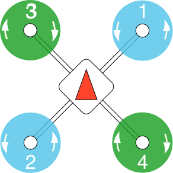

Wiring and Pin Diagrams¶
Notes :
- The Pixfalcon uses micro JST-SH connectors with pin pitch of 1 mm.
- The GPS module can directly be connected without any modification.
- The DYS comes with its own cables which are also SH type but will need to be snipped and soldered using the pin diagrams.
1. Cables required¶
- 4-pin JST-SH cable shipping with the DYS side - Used for Powering FC.
- 8-pin JST-SH cable shipping with the DYS side - Used for Motor Outputs.
- 10-pin JST-SH cable for the Pixfalcon side - Used for Motor Outputs.
- 4-pin JST-SH cable for the Pixfalcon side - Used for Sonar or Laser Rangefinder.
- 6-pin JST-SH cable for Pixfalcon side - Used for Power Input.
- 6-pin JST-SH cable for Pixfalcon side - Used on GPS - Ships with GPS.
2. Connections required¶
From the list given above,
Connect Cable 1 to Cable 5 according to the pin diagrams for powering the FC from the DYS ESC.
- Connect Cable 2 to Cable 3 according to the motor outputs such that it matches the motor number table given below.
Motor map from FC to ESC¶ DYS Pixfalcon Position Rotation M2 1 Front right CCW M3 2 Back left CCW M4 3 Front left CW M1 4 Back right CW 
Connect Cable 4 to the rangefinder according to the datasheet.
Connect Cable 6 directly to the GPS without any modification.
Connect the Spektrum receiver into the Spektrum port of the Pixfalcon directly.
{kind=link}
{kind=link}